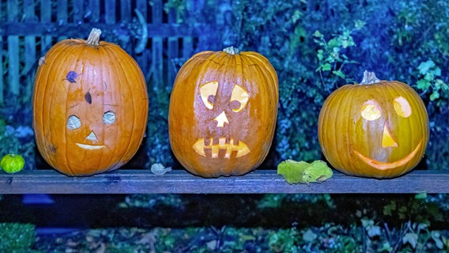

Halloween: Vom Totenkult zum Partyspaß
Stand: 22.10.2021 10:09 Uhr
Einst vertrieben die Kelten am 31. Oktober böse Geister. Heute spuken an Halloween kostümierte Kinder durch die Nachbarschaft und Erwachsene feiern Grusel-Partys. Warum feiern wir Halloween?
"Süßes oder Saures!" - mit diesem Schlachtruf ziehen am Abend des 31. Oktobers Scharen kleiner Hexen, Gespenster und Monster von Tür zu Tür. Ihr Ziel: von den Bewohnern Süßigkeiten einfordern. Ähnlich skurril kostümieren sich manche Erwachsene, die sich zu Partys treffen. Motto: "Dance of the Dead" oder "Beiß-Mich-Party". Es ist der Abend der Gespenster und Geister: Halloween.
Ursprung von Halloween liegt bei den Kelten
Das Fest des Grauens hat seinen Ursprung in Irland: In vorchristlicher Zeit begingen die Kelten am 31. Oktober Samhain, eines ihrer wichtigsten Feste. Sie feierten damit ihre Ernte, den Beginn der kalten Jahreszeit und den Start in ein neues Kalenderjahr. Die Kelten glaubten außerdem, dass es an diesem Tag Kontakte in das Reich der Toten geben kann.
Samhain: Die Toten sind unterwegs
Der Mythologie nach machten sich an Samhain die Toten auf die Suche nach den Lebenden, die im nächsten Jahr sterben sollten. Zur Abschreckung der bösen Geister verkleideten sich die Menschen mit furchterregenden Kostümen und spukten selbst bei Nacht durch die Straßen. Große Feuer sollten böse Geister fernhalten. Vor den Häusern standen kleine Gaben ("treats"), die die Geister besänftigen und von Untaten abhalten sollten.
Evangelische Christen feiern am 31. Oktober Reformationstag
Das Wort Halloween entstand mit der Christianisierung. Die Kirche bezeichnete das heidnische Fest im 9. Jahrhundert als "All Hallows Eve", als den Abend vor Allerheiligen am 1. November. Evangelische Christen erinnern am 31. Oktober mit dem Reformationstag daran, dass der Mönch und Theologe Martin Luther 1517 seine 95 Thesen zur Reform der Kirche in Wittenberg veröffentlicht hat.
Seit 2018 ist der Reformationstag in allen norddeutschen Bundesländern ein arbeitsfreier gesetzlicher Feiertag, das gilt für Niedersachsen, Schleswig-Holstein, Mecklenburg-Vorpommern, Hamburg und Bremen. Am 31. Oktober 2021 fällt der Reformationstag auf einen Sonntag.
Halloween als Party-Event erobert Deutschland
Zu einem Party-Event entwickelte sich Halloween erst, als irische Einwanderer den Brauch im 19. Jahrhundert nach Amerika brachten. Dort wird Halloween mit Monster-Kostümen, Gehirn-Wackelpudding und Friedhofs-Romantik gefeiert - und hat einen ähnlichen Stellenwert wie hierzulande der Karneval. Diese amerikanische, lustige Variante des Halloween-Festes hat inzwischen auch Deutschland erobert.
Jack O'Lantern: Kürbis-Laterne soll dem Teufel trotzen
Das Licht im ausgehöhlten Kürbis soll den Teufel und böse Geister fernhalten.
Der Brauch, Laternen aus Kürbissen zu schnitzen, geht ebenfalls auf eine Legende aus Irland zurück: Als ein Bösewicht namens Jack gestorben war, verwehrte ihm Gott den Zugang zum Himmel. Doch auch in der Hölle war Jack nicht willkommen, denn er hatte den Teufel zu Lebzeiten übers Ohr gehauen. Mit einem Stück Kohle, das er in eine ausgehöhlte Rübe legte, machte sich Jack auf die Suche nach einem Ort, an dem er bleiben konnte.Aus dieser Legende leiteten die Menschen den Glauben ab, dass ein brennendes Stück Kohle in einer Rübe die Macht habe, den Teufel und böse Geister fernzuhalten. Als viele Iren nach Amerika auswanderten, nahmen sie diesen Brauch mit. In den USA war der heimische Kürbis größer und leichter zu bearbeiten als Rüben. So löste er die Rübe als Jack O'Lantern ab - wie die geschnitzte Laterne im englischsprachigen Raum genannt wird.
Halloween: Der Handel feiert mit
Inzwischen hat der Handel den kommerziellen Wert von Halloween erkannt und bietet ein breites Sortiment an Grusel-Utensilien: von Masken und Kostümen über Gummi-Spinnen und -schädel bis zu Dekorationsartikeln für den Partyraum. Natürlich dürfen auch Kürbisse nicht fehlen - echte, aus Kunststoff oder auch als gedruckte Aufkleber. So wird Halloween auch zu einem Fest in den Kassen der Händler.